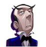
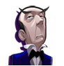

11 |
Grundregeln und Basisinfos |
 |
Grundregeln Die vier Spielfiguren würfeln nacheinander mithilfe der Kristallkugel. Die Zahl bestimmt, wie viele Felder auf dem Brett die Kutsche vorrückt. Während die Kutsche auf dem Brett vorrückt, kann mit dem Cursor auf Münzen und Juwelen gezeigt werden, um diese einzusammeln. Wenn die Kutsche auf ein Feld vorrückt, das mit einem positiven oder negativen Betrag gekennzeichnet ist, gewinnt oder verliert jede Spielfigur den angezeigten Betrag in Münzen. Die Kosten für das Öffnen einer Schriftrolle sowie die Strafe für ein falsches Passwort werden zwischen allen vier Spielfiguren aufgeteilt. Unterschiedliche Beträge können die Spielfiguren durch das Sammeln von Münzen und Juwelen auf dem Brett sowie in Minispielen und Brettspiel-Challenges einnehmen. Wenn die Kutsche zerstört wird und die Spielfiguren keine 500 Münzen haben, um die Reparatur zu bezahlen, ist das Spiel verloren. Wenn das richtige Passwort eingegeben wird, gewinnt die Gruppe das Spiel und erhält Fazzys Schatz. Dann folgt das letzte Minispiel, Zielgerade. Nach dessen Abschluss belegen die Spielfiguren entsprechend ihres aktuellen Geldbetrags den 1. bis 4. Platz der Rangliste. Ihrer Leistung entsprechend erhalten sie außerdem einen Pokal und einen Titel. Beispiel: Wer das beste Ergebnis erzielt, erhält den Titel “Geisterhaus-König”. Wird ein falsches Passwort eingegeben, verliert die Gruppe 200 Münzen (jede Spielfigur zahlt so viel sie kann, abhängig von der Anzahl der von ihr angesammelten Münzen) und das Spiel geht weiter. Wenn die Spielfiguren jedoch alle Münzen verloren haben, ist das Spiel verloren. Wenn die Gruppe 5 Hinweise gefunden hat, kann sie entweder versuchen, über das Antwort-Feld das mögliche Passwort einzugeben oder über das Reset-Feld die aktuellen Hinweise und das aktuelle Passwort löschen und weiterspielen. Solange noch nicht alle 5 Hinweise gefunden wurden, stehen 3 Möglichkeiten zur Auswahl: Ein mögliches Passwort eingeben, über das Reset-Feld die aktuellen Hinweise und das aktuelle Passwort löschen und weiterspielen oder weiterspielen, ohne Hinweise und Passwort zu löschen. Das Löschen kostet 200 Münzen, aber wenn nicht genügend Geld verfügbar ist, hast du nur zwei Möglichkeiten: das Spiel fortsetzen oder die Antwort erraten. Basisinfos
Spieler können eine von vier Spielfiguren wählen: einen Jungen, ein Mädchen, einen Diener oder einen alten Mann.
Fazzy ist ein Freund, der die Gruppe durch das Spiel begleitet, Tipps gibt und Hinweise verkauft.
Die vier Spielfiguren sitzen in Fazzys magischer Kürbiskutsche und bewegen sich zusammen auf dem Spielfeld. In der Brettspiel-Challenge Geisterkampf schießen Geister auf die Kutsche und können sie dadurch beschädigen. Wenn die Kutsche zerstört wird, muss die Gruppe 500 Münzen für die Reparatur bezahlen. Wenn die Spielfiguren jedoch nicht genug Münzen besitzen, ist das Spiel verloren. Ist die Kutsche nur beschädigt und nicht zerstört, kann sie erst dann repariert werden, wenn ein Reparatur-Feld passiert wird. Ist ein Spieler an der Reihe, mit der Kristallkugel zu würfeln, kann die aktuelle Widerstandskraft der Kutsche angezeigt werden, indem der Cursor auf ihr platziert wird. Magische Schriftrollen enthalten Hinweise, die der Gruppe helfen, das Passwort zu ermitteln und zum Schatz zu gelangen.
Die Spielfiguren können vom Zauberergeist geschrumpft werden, um an besondere Orte zu gelangen. Sobald sie einen besonderen Ort verlassen, gibt er ihnen ihre normale Größe zurück. Der Zauberergeist erscheint nur in der Nähe der Zugänge zu manchen dieser Orte.
Mithilfe der Kristallkugel wird ermittelt, wie viele Felder die Kutsche vorrücken darf. Die Symbole für die grundlegenden Spielfigureninfos sind in den Bildschirmecken zu sehen. Sie zeigen Spielerinfos und den aktuellen Geldbetrag an. |

 



 |
 |
 |